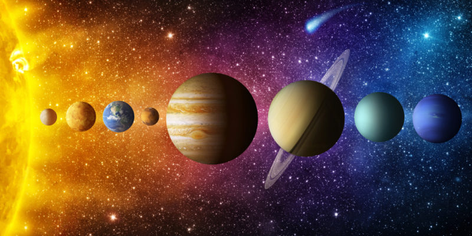

SISTEMA SOLAR
SISTEMA SOLAREl Sistema Solar es un sistema planetario formado por una estrella central (el Sol) y cuerpos celestes
orbitando a su alrededor, como planetas, satélites, cometas, etc.
Más allá de nuestro sistema, se encuentran otros sistemas planetarios, montones de galaxias, estrellas y
la
inmensidad del universo.
Para más información haz click aquí o en la imágen que te llevará a la wikipedia.
